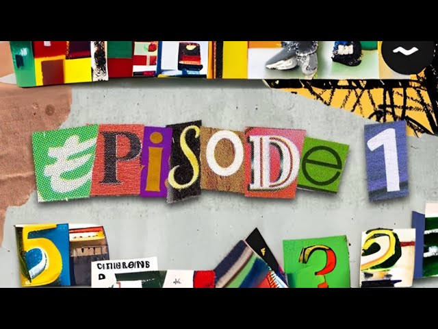

PROJECTS
A selection of work realised by the agency.

The Country House
A Ukrainian family flees the city to take refuge in their country house.
Miroslav, a 17-year-old, is tasked with looking after his younger sister
Krystyna, who is deaf. As bombs fall nearby and resources run low, Miroslav
tries to convince his mother to leave the country house.

Burning
Léo, a shy, withdrawn young student, falls under the spell of a girl he
meets at a party.

Trash Can! (Series)
“Trash Can!” is a dramedy telling the story of Elly, a young woman who has
just been abandoned by her mother and left with heavy debts. She must find a
way to repay them, or risk being evicted from her home. That’s when she comes
up with a most unlikely idea: stealing trash cans and reselling them. To pull
off her plan, she’ll need the help of Vince, the local delivery guy. An
unlikely friendship begins to take shape — and, of course, not everything
goes as planned.

I’m Gonna Kill You — Inspired by “The Hateful Eight”
A parody inspired by “The Hateful Eight.”

Social Media – TV Report
A TV report on social media and the impact it has on young people’s mental
health and bodies.

Halyna’s Story
Halyna Radchuk is a 19-year-old who grew up in Kyiv, Ukraine. She practiced
figure skating at a professional level but had to give it up following an
injury. We discover how, with the help of her friends and family, she managed
to bounce back. Halyna shares with the audience the hardships she overcame to
build a promising future.

The Exam
Two high-school students, Charlie and Peggy, have an exam coming up — and will
do everything in their power to get hold of the test beforehand.

The Book of the Year
A stolen idea — let justice be done.